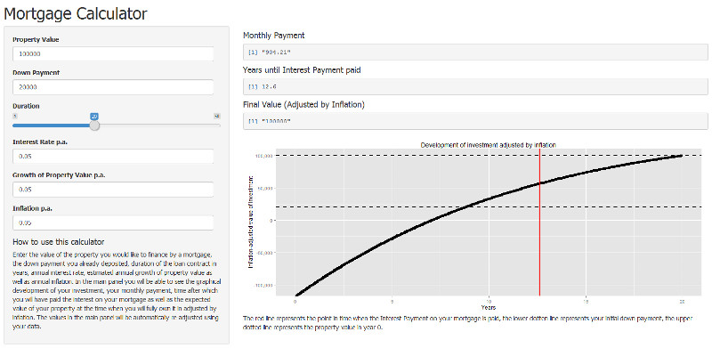

Imagine you have a mortgage loan contract for a property of a value of \(€ \ 100\ 000\) and a down payment of \(€\ 20\ 000\) at a \(5\%\) interest rate.
You are offered two payment plans, one in which you pay regular monthly payment of \(€\ 904.21\) and the other with monthly payments of \(€\ 925.77\).
If the conditions of your contract remain unchanged, if you choose the lower monthly rates, how much longer will be the duration of your mortgage?
This slight increase of your monthly payments at about \(€\ 21.56\) per month would save you 4 years.
To make informed decisions about your mortgage you need the maths. The mortgage calculator will do it for you for free!
It allows you to:
You enter all the basic data of your mortgage contract into this simple form and the rest is calculated for you automatically:

Let me now present you the calculation for monthly payments used in Mortgage Calculator in R:
property.value <- 100000
downpayment <- 20000
interest.rate <- 0.05
duration <- 20
mortgage <- property.value - downpayment
interest.payment <- mortgage * ((1 + interest.rate/12)^(12*duration)-1)
payment <- (mortgage + interest.payment)/(duration*12)
print(payment)
## [1] 904.2134